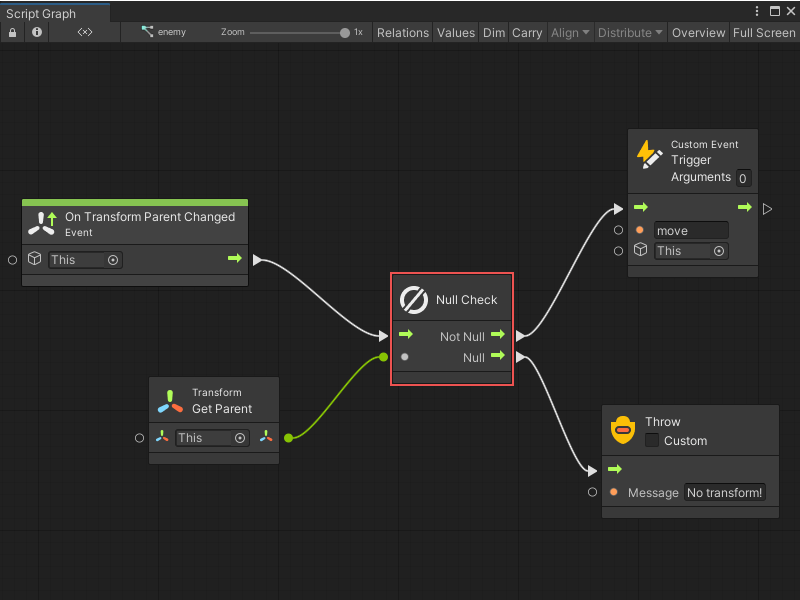
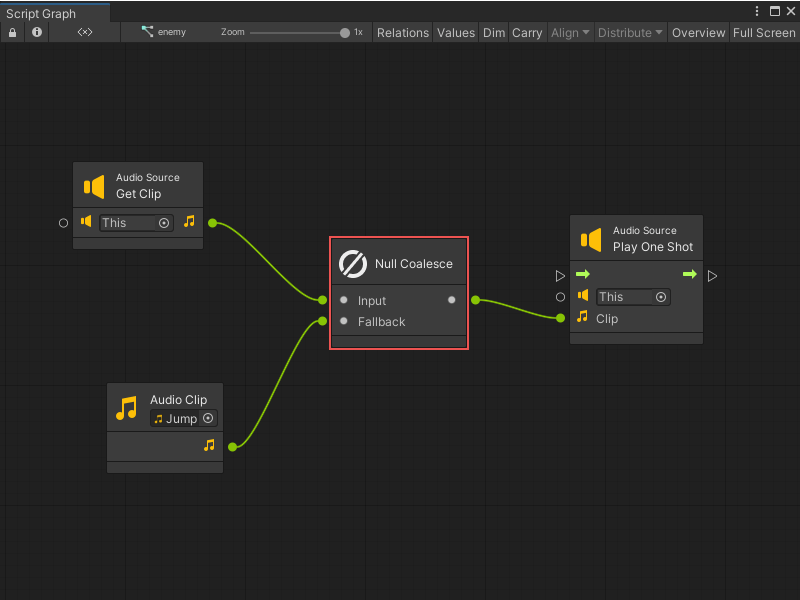

Nulls node¶
[!NOTE] For versions 2019/2020 LTS, download the Visual Scripting package from the Unity Asset Store.
Null nodes deal with the null value, which is scripting lingo for “nothing”.
The null node¶
The null node always returns null as a value. Leaving a Unity object reference field empty (“None”) automatically means null.
Null Check¶
The null check is a shortcut for a branch on an equality comparison with null. It can be useful to direct the flow in different directions depending on whether a value is null.
For example, it can be used to handle a situation differently whether a transform has a parent in the hierarchy or not.

Null Coalesce¶
The null coalesce node provides a fallback value in case the original input is null.
For example, the null coalesce node defines a default fallback audio clip in case the one on the audio source is missing.
